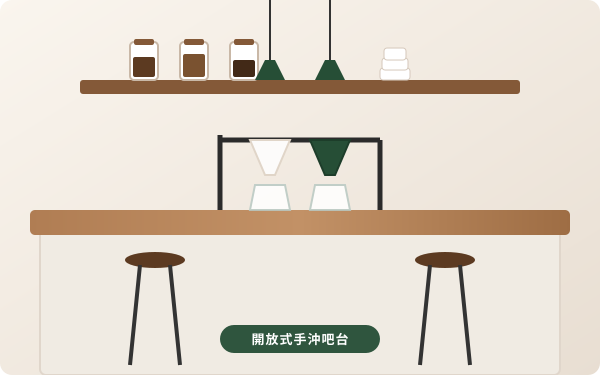
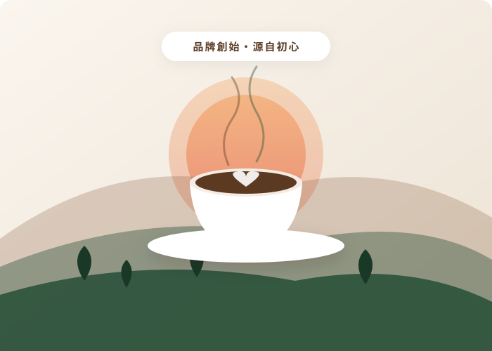
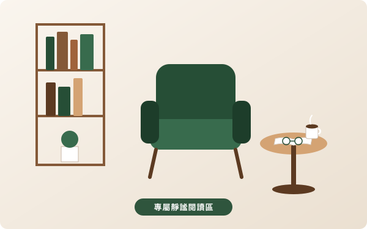
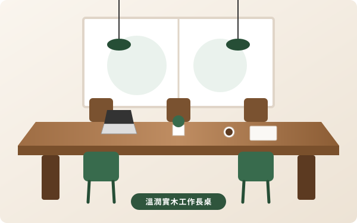

陽光手沖吧台
開放式吧台設計，能近距離欣賞職人注水沖煮的流暢儀式，更能直接與咖啡師交流今日各產區生豆的獨特風味。

在車水馬龍、節奏飛快的城市街道上，創辦人常常思索：為什麼喝咖啡成了一種匆忙的提神差事，而不是一段值得期待的放鬆時刻？
2024 年，「歐椰咖啡」在對生活純粹溫度的渴望中誕生。我們希望打破忙碌的慣性，打造一個可以讓人真正卸下防備、安心深呼吸的角落。在這裡，咖啡不是趕時間的產物，而是陪伴你慢下來、重新傾聽內心聲音的溫暖媒介。
每一顆咖啡豆都經過細心尋訪與手作沖煮，期待透過每一縷氤氳香氣，為每位走入店裡的旅人找回生活中最純淨的節奏。
我們以嚴謹態度對待每一杯咖啡與每一次相遇，堅守不變的承諾。
絕不使用人工香精與過度添加物。我們完整保留產區咖啡豆特有的花香、果酸與堅果調性，呈現大自然風土最原本真實的迷人風味。
精準掌握粉水比、研磨粗細、水溫與萃取曲線。每一道工序皆由對咖啡充滿熱忱的咖啡師親手細心沖煮，傳遞手作的溫潤與細緻層次。
支持永續生態的小農公平交易生豆，店內全面採用無氯可降解環保外帶包材，以對環境更溫柔的方式實踐與土地共好的綠色承諾。
自然採光結合暖調原木材質，為你準備不同時光所需的沉浸空間。

開放式吧台設計，能近距離欣賞職人注水沖煮的流暢儀式，更能直接與咖啡師交流今日各產區生豆的獨特風味。

備有舒適包裹感的單人布沙發、柔和護眼閱讀燈與精選選書。配上輕柔背景音樂，享受無人打擾的專屬獨處時光。

嚴選厚實溫潤的實木長桌，全座席均貼心配置電源插座與高速無線網路，適合筆電辦公、閱讀創作或好友交流。